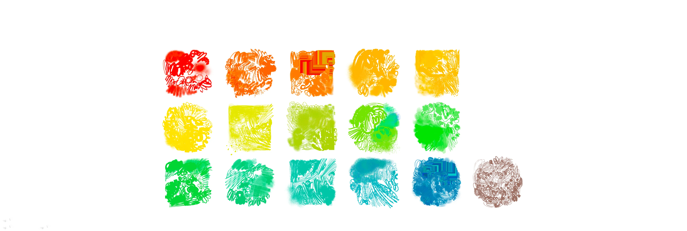
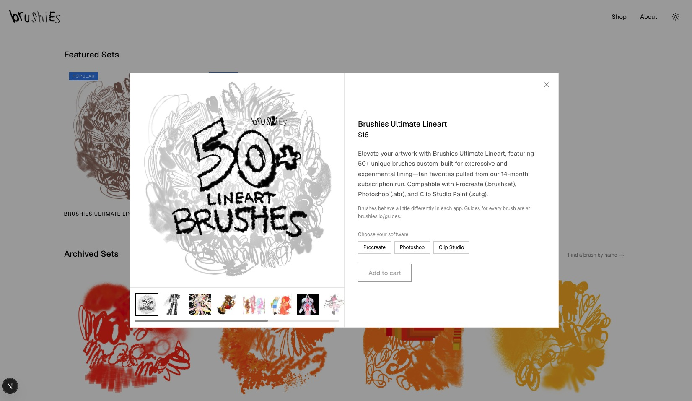
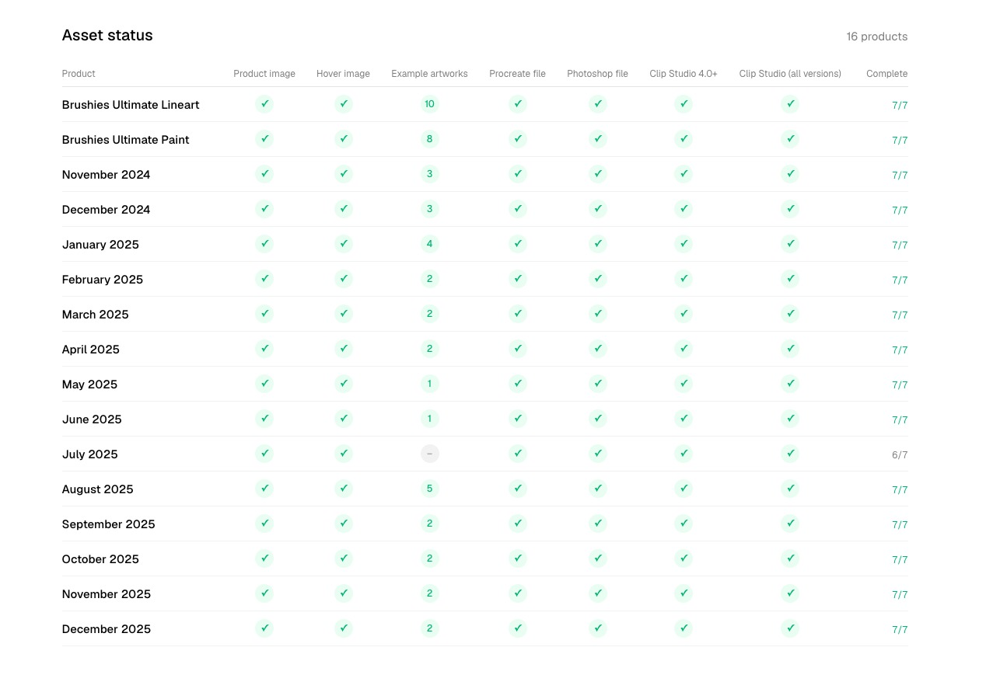
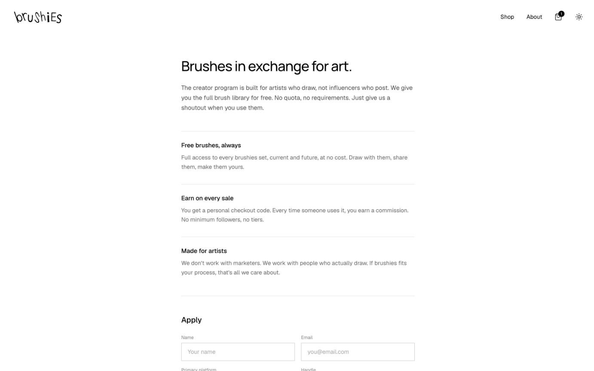
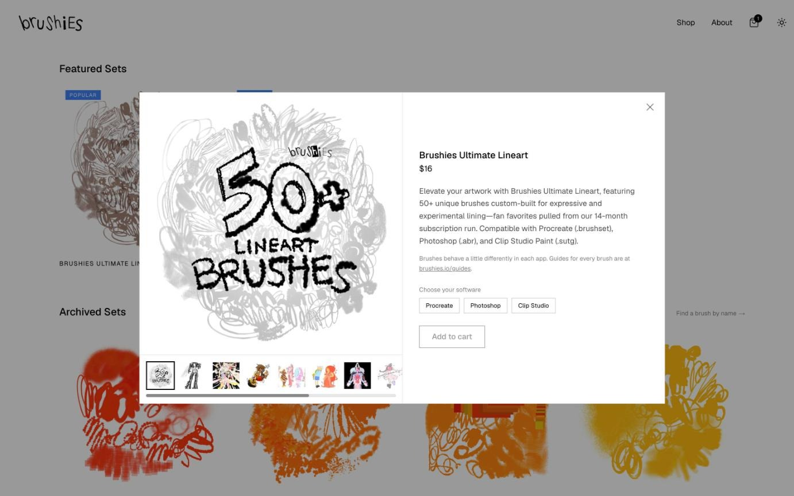
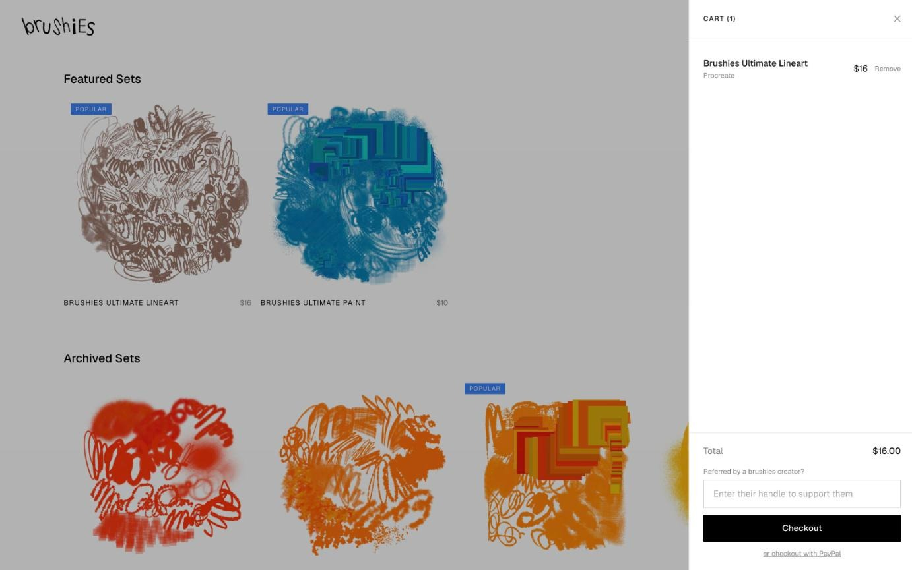
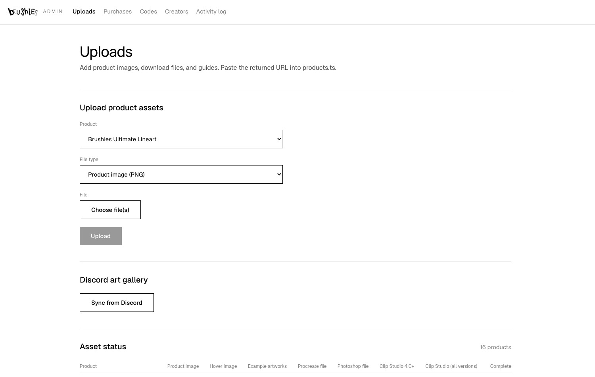

Rebuilding Brushies: Taking Ownership of the UX
About Brushies
Designed for digital artists, Brushies delivers experimental brush sets, textures, and instructional guides for Procreate, Photoshop, and Clip Studio Paint. What began as a monthly subscription on a no-code site builder is now a custom storefront with purchases from over 1,400 independent artists. This case study covers the rebuild, and how the platform itself had become the biggest obstacle to a better user experience.
My role
UX Designer,
Front-end Developer
Tools
Figma, Next.js,
Vercel, Tailwind
Timeline
2025–2026, ongoing
1. Overview
Problem
Despite a successful first redesign, Brushies had outgrown its site builder. Every improvement users asked for ran into the limits of the platform.
My initial research on Brushies surfaced five user frictions, and I addressed what I could within Squarespace. The fixes were largely cosmetic. I couldn’t resend a file to a user who mistyped their email, couldn’t offer artists a referral code, couldn’t pull community artwork into the gallery without a manual process, and couldn’t get the layout to behave reliably across screen sizes. The constraint on the user experience was no longer the design. It was the platform underneath it.
Solution
I rebuilt Brushies as a custom storefront on Vercel, taking ownership of checkout, file delivery, admin tooling, and the cost structure.
The new site keeps the brand and the brushes, but everything around them is now mine to shape: a shop with a software selector that prevents wrong-format orders, a cart with creator referral codes, email-based download delivery I can re-trigger in seconds, a creator program with its own application flow, a community gallery connected to Discord, and a back office that logs every purchase and action. Fixed platform costs dropped by roughly 40%, and the 1% per-sale platform fee was eliminated.
Owned
Every flow is built, not configured
Product pages, cart, checkout, and the post-purchase email are custom code. When a user encounters friction, the fix is a commit rather than a support ticket to a platform that may never address it.


Operable
Purpose-built tools for running the store
An admin dashboard provides purchase history, an activity log, creator code management, and one-click file resends. The experience of operating Brushies matters as much as the experience of buying from it.
Sustainable
Lower overhead, so the platform can keep growing
For a bootstrapped product selling $4 brush packs, platform fees are a design constraint. Reducing fixed costs and eliminating the per-sale cut leaves more room to keep prices accessible and to keep paying the artists who help Brushies grow.

2. Research
Revisiting the First Study
Identifying which of the original user findings could not be fully resolved on a no-code platform
In my first Brushies case study, moderated usability sessions with digital artists produced a clear list of pain points: the site was unoptimized for tablets, navigation broke the experience, product information was scattered across pages, and users wanted to subscribe and download without leaving the site. I redesigned the pages, restructured the information architecture, and built a member portal as far as Squarespace would allow.
Then I ran the store for a year. That is when the gap between what users needed and what the platform permitted stopped being theoretical.
Living with the Platform
Observing the recurring moments where Squarespace stood between users and the experience they expected
Wrong email, wrong software. The most common support request came from users who mistyped their email at checkout, or purchased the Procreate set when they needed Photoshop. On Squarespace there was no way to look up the order and resend the correct file. Each case became a manual email exchange, and occasionally a refund and repurchase.
No creator codes. Brushies grows when artists share their work. I wanted to give those artists a personal referral code and pay them a commission on resulting sales. That requires a backend that ties codes to purchases, which the platform did not provide.
A gallery that couldn’t stay current. The community spotlight was meant to showcase art made with the brushes. Pulling that work in from Discord or social media meant downloading, re-uploading, and placing every image by hand. It fell out of date within weeks.
Unreliable layouts, and no dark mode. Tablet layouts, the same issue users flagged in the first study, remained inconsistent because responsive behavior was whatever the builder decided. Dark mode, a frequent request from artists who work at night, wasn’t possible at all.
In the end, three patterns stood out across a year of support requests:
The platform owned the moments that mattered most.
Checkout, file delivery, and order lookup are where user trust is won or lost. Those were the parts of the experience I couldn’t touch.
Every workaround cost the user time.
A file resend that should take seconds instead took a day of back-and-forth. For a $4 purchase, that ratio is unacceptable.
The fees were shaping the product.
$39 a month plus 1% on every digital sale, before payment processing, meant the most affordable items I wanted to offer barely covered their own costs.
3. Decision
Weighing the Options
Evaluating whether to stay, switch builders, or build the platform myself
Rebuilding a working store is a real risk, so before committing I laid out three paths. Staying meant accepting the ceiling and the fees. Switching to another hosted platform such as Shopify, Gumroad, or Lemon Squeezy would have solved some of the delivery problems, but it would have traded one set of constraints and fees for another, and still wouldn’t have supported creator codes or a gallery pipeline. Building custom meant upfront time and ongoing maintenance, but it was the only option that removed the ceiling instead of relocating it.
What tipped the decision was recognizing how much of Brushies’ roadmap, from creator payouts to custom brush commissions, depended on owning a backend. Every other path would have required building custom eventually.
Before · Squarespace
$468/yr
$39 per month, billed annually
+ 1% platform fee on every digital sale
+ 1.7% payment processing
After · Vercel + custom build
$270/yr
$20 per month Vercel Pro (hosting + Blob storage)
+ $30 per year domain
No platform fee. Processing only.
Fixed costs reduced by roughly 42%. The per-sale platform fee is eliminated; standard payment processing still applies.
Rethinking the Model
Moving from a monthly subscription to a one-time purchase archive
The rebuild was also the right moment to reconsider what Brushies sells. The subscription ran for fourteen months and produced a deep library, but it also produced the delivery headaches described above, and it asked artists to commit before they had tried a single brush. The new model is simpler: every monthly set from the run is available as a one-time $4 purchase in the archive, and fan-favorite brushes are compiled into larger “Ultimate” sets. Artists buy exactly what they want, once, and own the file.
4. Design
Design Principles
Preserving the brand while rebuilding the flows beneath it
Users liked Brushies. What they didn’t like were the moments the platform made awkward. The redesign kept the hand-drawn logo, the “Kiss art block goodbye” tagline, and the artist-first tone, and focused its effort on the flows underneath: finding the right set, purchasing it in the right format, receiving the file, and coming back.
I designed in Figma first, then built directly in Next.js and Tailwind so that every responsive breakpoint was a decision I made rather than a default I inherited.
Flow 1: Purchasing
Introducing a software selector that makes the wrong order impossible
The largest source of support email was format confusion. The product sheet now asks users to “Choose your software” before the add-to-cart button is enabled, and the cart carries that choice through checkout. The file delivered after purchase matches the selection. One small, required decision removed an entire category of mistakes.

Flow 2: Creator Codes
Turning word-of-mouth into something measurable and rewardable
The cart includes one additional field: “Referred by a brushies creator?” Entering a handle supports that artist with a commission on the sale. Behind it is the Creator Program, a short application flow aimed at people who draw rather than people who post. Accepted creators receive the full library at no cost, along with a personal code. Codes and commissions are managed in the admin backend, the piece Squarespace could never have provided.

Flow 3: Community Gallery
Surfacing artists’ work directly from where the community gathers
The “Made with brushies” gallery on the homepage is now connected to Discord. When artists share work in the community server, it can be featured on the site without downloading or re-uploading anything. The gallery stays current, and artists have a reason to post in the first place.
Flow 4: Back Office
Designing for the person who answers the support email
The admin dashboard is the least glamorous part of the site and the part I use most. It lists purchases, logs every meaningful action, manages creator codes and applications, and lets me resend a download to a corrected email or in a different software format in a single click. The “wrong email” problem that once took a day now takes under a minute, and users receive their file before they have a chance to get frustrated.

Responsive & Dark Mode
Finishing what the first study started
With the layout in my own code, the tablet breakpoints that never quite worked on the builder were finally designed intentionally, and the site gained a true dark mode, a request I had heard for a year from artists who draw with the lights off. Both were impossible before. Both took an afternoon once I owned the stylesheet.
5. Rollout & Reflection
Rollout
Migrating a live store without losing a single customer
The new site launched on the same domain with every archived set available from day one, so returning artists found their brushes where they expected them. Download delivery moved to email, with files served from Vercel Blob, which also meant existing customers could be re-sent anything they had lost. Brushies has now been purchased by over 1,400 independent artists, and the support inbox has gone quiet.
Reflection and Takeaways
1. Treating the platform as part of the design
It is easy to treat a site builder as neutral ground and blame yourself when a flow feels clumsy. The first Brushies study taught me what users wanted. Running the store taught me that some of it was never going to be possible where I was standing. Recognizing when the constraint is the tool rather than the design is a UX skill.
2. Understanding cost as a user experience
I used to think of fees as a business problem that lived in a spreadsheet. In reality, a 1% cut on a $4 pack determines whether that pack exists, what it costs, and whether I can pay a creator for sending someone to it. Cutting costs was never separate from improving the experience. It is what made the experience affordable to keep improving.
3. Designing the admin as if a user were watching
Nobody sees the back office, but every customer feels it. The speed of a resend, the accuracy of an order lookup, the ability to catch a mistake before the user does: all of that is UX, delivered one step removed. Building tools for myself turned out to be the most direct way to improve things for everyone else.